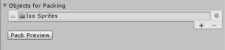
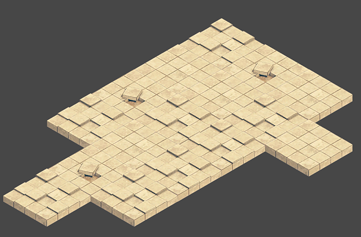

Tilemap Renderer 组件用于渲染场景中的瓦片地图 (Tilemap)。Unity 会创建默认附加了 Tilemap Renderer 组件的瓦片地图。Tilemap Renderer 可以：
渲染模式 (Render Mode) 会影响瓦片地图精灵渲染时的排序方式。
Chunk Mode 是 Tilemap Renderer 的默认渲染模式：
设置为 Chunk Mode 时，Tilemap Renderer 会批量处理瓦片地图上的精灵，并将它们一起渲染。在 2D 透明队列中排序时，这些精灵被视为单个排序项。此模式通过减少绘制调用的数量来提高整体性能，但是其他渲染器无法在瓦片地图的任何部分之间进行渲染，因此会阻止其他渲染的精灵与瓦片地图精灵之间交织。
在 Chunk Mode 模式下，Tilemap Renderer 无法单独从多个纹理对瓦片进行排序，也不能一致地渲染瓦片精灵（请参阅下面的示例）。
将构成瓦片地图的所有精灵个体打包到单个精灵图集中可解决此问题。为此需要执行以下操作：
1.从 Assets 菜单创建__精灵图集__（选择：__Atlas > Create > Sprite Atlas__）。 2.向精灵图集添加精灵，方法是在精灵图集的 Inspector 窗口中将精灵拖到 Objects for Packing 列表中。 
3.单击 Pack Preview。Unity 在播放模式下将精灵打包到精灵图集中，并正确排序和渲染精灵。仅播放模式下在 Editor 中可见。 
在 Individual Mode 模式下，Tilemap Renderer 会对瓦片地图上的精灵进行排序和渲染，同时考虑场景中的其他渲染器，例如 Sprite Renderer 和 Mesh Renderer。如果其他渲染器与瓦片地图上的精灵和对象进行交互，请使用此模式。
在此模式下，Tilemap Renderer 根据精灵在瓦片地图上的位置以及在 Tilemap Renderer 中设置的排序属性对精灵进行排序。例如，允许角色精灵进入障碍物精灵之间（请参阅下面的示例）。
同样的示例在 Chunk Mode 模式下，角色精灵可能会被隐藏在地面精灵后面：
使用 Individual Mode 模式可能会降低性能，因为在瓦片地图上单独渲染每个精灵会产生更多开销。
要在 Isometric Z as Y Tilemap 瓦片地图上正确排序和渲染瓦片精灵，Transparency Sort Axis 必须设置为 Custom Axis。首先将 Renderer Mode 设置为“Individual Mode”，然后选择 Edit > Settings > Graphics。
将 Transparency Sort Mode 设置为 Custom Axis__，并将其 Y 值设置为 –0.26。请参阅创建等距瓦片地图页面以了解有关 Transparency Sort Axis__ 设置的更多信息。